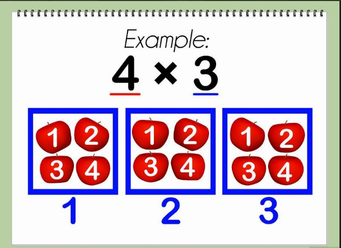

Comment diviser
La multiplication fait partie des quatre opérations arithmétiques de base et peut être vue comme une addition répétée. Cette opération mathématique consiste utiliser un nombre pour en mettre un autre à l’échelle. Si vous voulez apprendre comment multiplier avec la méthode de l’addition ou comment poser une multiplication, les étapes sont expliquées ci-dessous.
Méthode 1 : Additionner
1. Écrivez le problème
. Regardons comment résoudre 4 x 3. Vous devez comprendr
e que la précédente phrase mathématique est juste une autre
façon d’écrire 3 groupes de 4.
Vous pouvez voir cela comme une addition répétée,
où le nombre 4 sera répété 3 fois.
2. Utilisez la méthode de l’addition répétée pour résoudre ce problème.
Sachant que chacun des trois groupes possède quatre objets, vous devrez additionner 3 fois le nombre 4. 4 + 4 + 4 = 12.
Vous pouvez aussi considérer 4 groupes de 3 à la place.
Vous obtiendrez le même résultat. Additionnez les nombres du problème de la façon suivante : 3 + 3 + 3 + 3 et vous obtiendrez 12, comme précédemment.
Méthode 2: Poser une multiplication
1Alignez verticalement les nombres que vous devez multipliez. Demandez-leur de créer leurs propres matériels éducatifs. Invitez-les à utiliser de la pâte à modeler pour créer des objets manipulables ou à mettre en pratique la notion de sommation pendant un cours artistique en utilisant des ciseaux pour créer une série de formes de papier .

4
Placez les nombres les plus grands en haut des nombres les plus petits et alignez les chiffres des centaines, des dizaines et des unités. Par exemple, pour résoudre 187 x 54, vous devez aligner le 7 au-dessus du 4, le 8 au-dessus du 5, et le 1 au-dessus d’aucun nombre, puisque 54 ne possède aucun chiffre dans la colonne des centaines.
Notez le signe des multiplications en dessous et à gauche du nombre du bas, puis tracez une ligne sous le nombre du bas. Vous commencerez à multiplier les nombres en dessous de cette ligne.
2
Multipliez le chiffre de la colonne des unités dans le nombre situé en-dessous avec le chiffre de la colonne des unités dans le nombre du dessus.
Multipliez 4 x 7. Le résultat est 28, alors écrivez le 8 du nombre 28 au-dessus du 4, et mettez le chiffre 2 du nombre 28 au-dessus du 8.
À chaque fois que vous obtiendrez un résultat à deux chiffres, mettez le premier au-dessus du chiffre situé à gauche de celui qui vient d’être multiplié dans le nombre du haut, et placez le second chiffre de votre résultat en-dessous du chiffre de la seconde ligne que vous venez de multiplier.
3
Multipliez le chiffre de la colonne des unités dans le nombre situé en-dessous avec le chiffre de la colonne des dizaines dans le nombre du dessus.
Dans un premier temps, vous avez multiplié le chiffre 4 par le chiffre de la colonne des unités ; à présent, il faut le multiplier par le chiffre de la colonne des dizaines. Multipliez 4 par 8, le chiffre à gauche du 7. 8 x 4 = 32. N’oubliez pas que vous avez placé le chiffre 2 au-dessus du 8. Il vous reste à additionner le chiffre 2 à votre résultat. 32 + 2 = 34.
Placez le 4 du nombre 34 en-dessous de la ligne sous le 8, à côté du nombre 8 que vous avez noté au cours de l’étape précédente.
Placez le 3 du nombre 34 au-dessus du 1 du nombre 187.
4
Multipliez le nombre de la colonne des unités du nombre du dessous avec le chiffre de la colonne des centaines du nombre du dessus.
Vous venez de multiplier le 4 par le chiffre dans la colonne des dizaines ; vous devez à présent le multiplier par le chiffre dans la colonne des centaines. 4 x 1 = 4. À présent, additionnez le chiffre que vous aviez placé en dessus du 1 à votre résultat. 4 + 3 = 7. Notez ce nombre sous la ligne en dessous du 1.
En posant votre multiplication, vous avez réussi à multiplier 4 par 187 pour obtenir 748.
Notez que si le nombre du dessus possédait plus de 3 chiffres, vous auriez dû répéter le processus jusqu’à ce que le nombre situé dans la colonne des unités du nombre du dessous ait été multiplié par tous les chiffres du nombre du dessus, toujours en allant de la droite vers la gauche.
5 Placez un zéro dans la colonne des unités sous votre résultat précédent.Placez un zéro dans la colonne des unités de la nouvelle ligne sous le 8 du nombre 748. Il s’agit juste d’une indication propre à cette pour montrer que vous allez multiplier la colonne des dizaines.
6
Multipliez le chiffre des dizaines du nombre du dessous par le chiffre des unités dans le nombre du dessus.
Multipliez 5 fois 7 pour obtenir 35.
Notez le 5 du nombre 35 à gauche du 0 et placez le 3 du nombre 35 au-dessus du 8 du nombre du dessus.
7
Multipliez le chiffre des dizaines du nombre du dessous avec le chiffre des centaines du nombre du dessus.Multipliez 5 par 8 pour obtenir 40. Ajoutez au nombre 40 le chiffre 3 au-dessus du 8 pour obtenir 43.
Écrivez le 3 du nombre 43 à gauche du 5 et placez le 4 du nombre 43 au-dessus du 1 dans le nombre du dessus.
8
Additionnez les résultats. Faites une addition simple pour obtenir la somme de précédents résultats, soit 748 et 9 350, et vous aurez terminé.
748 + 9 350 = 10 098